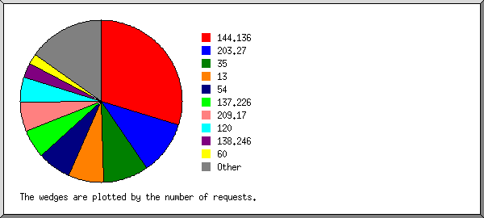
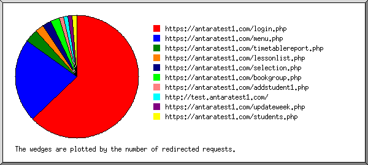
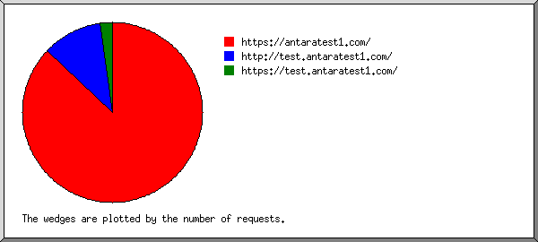
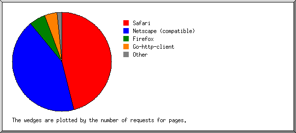
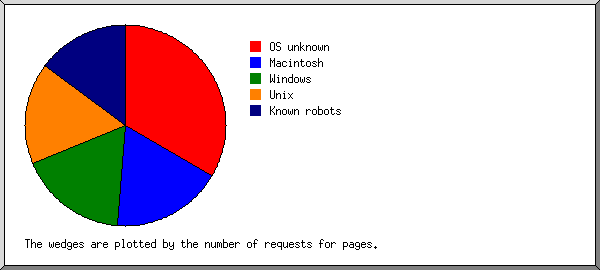
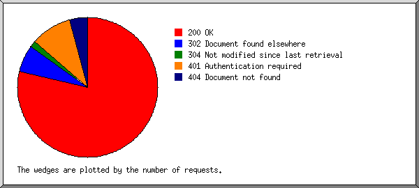
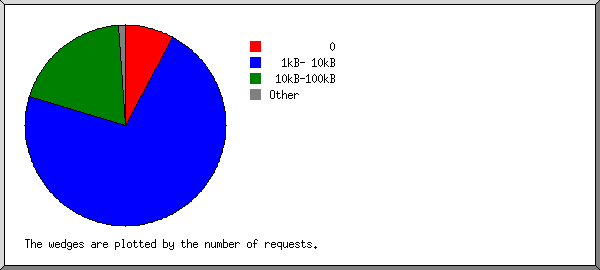
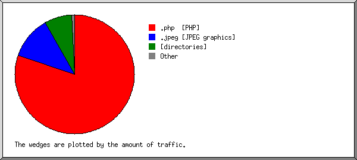
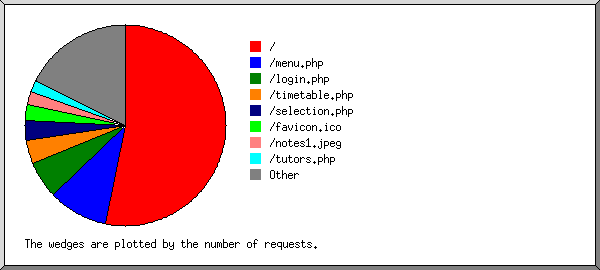

Web Server Statistics for antaratest1.com
Web Server Statistics for antaratest1.com
Program started on Wed, Oct 31 2018 at 10:04 PM.
Analyzed requests from Wed, Aug 08 2018 at 4:16 PM to Wed, Oct 31 2018 at 10:30 AM (83.76 days).
Web Server Statistics for antaratest1.comProgram started on Wed, Oct 31 2018 at 10:04 PM.
Analyzed requests from Wed, Aug 08 2018 at 4:16 PM to Wed, Oct 31 2018 at 10:30 AM (83.76 days).
(Go To: Top | General Summary | Monthly Report | Daily Summary | Hourly Summary | Domain Report | Organization Report | Redirected Referrer Report | Referring Site Report | Browser Report | Browser Summary | Operating System Report | Status Code Report | File Size Report | File Type Report | Directory Report | Request Report)
Figures in parentheses refer to the 7-day period ending Oct 31 2018 at 10:04 PM.
Successful requests: 356 (9)
Average successful requests per day: 4 (1)
Successful requests for pages: 126 (9)
Average successful requests for pages per day: 1 (1)
Failed requests: 7 (0)
Redirected requests: 44 (0)
Distinct files requested: 40 (42)
Distinct hosts served: 40 (46)
Data transferred: 3.31 megabytes (8.52 kilobytes)
Average data transferred per day: 40.41 kilobytes (1.22 kilobytes)
(Go To: Top | General Summary | Monthly Report | Daily Summary | Hourly Summary | Domain Report | Organization Report | Redirected Referrer Report | Referring Site Report | Browser Report | Browser Summary | Operating System Report | Status Code Report | File Size Report | File Type Report | Directory Report | Request Report)
Each unit ( ) represents 2 requests for pages or part thereof.
) represents 2 requests for pages or part thereof.
| month | #reqs | #pages | |
|---|---|---|---|
| Aug 2018 | 190 | 29 |    |
| Sep 2018 | 128 | 59 |  |
| Oct 2018 | 38 | 38 | |
Busiest month: Sep 2018 (59 requests for pages).
(Go To: Top | General Summary | Monthly Report | Daily Summary | Hourly Summary | Domain Report | Organization Report | Redirected Referrer Report | Referring Site Report | Browser Report | Browser Summary | Operating System Report | Status Code Report | File Size Report | File Type Report | Directory Report | Request Report)
Each unit () represents 1 request for a page.
| day | #reqs | #pages | |
|---|---|---|---|
| Sun | 13 | 13 | |
| Mon | 27 | 14 | |
| Tue | 95 | 32 |  |
| Wed | 149 | 19 | |
| Thu | 33 | 14 | |
| Fri | 29 | 24 | |
| Sat | 10 | 10 | |
(Go To: Top | General Summary | Monthly Report | Daily Summary | Hourly Summary | Domain Report | Organization Report | Redirected Referrer Report | Referring Site Report | Browser Report | Browser Summary | Operating System Report | Status Code Report | File Size Report | File Type Report | Directory Report | Request Report)
Each unit () represents 1 request for a page.
| hour | #reqs | #pages | |
|---|---|---|---|
| 0 | 5 | 5 | |
| 1 | 2 | 2 | |
| 2 | 5 | 5 | |
| 3 | 4 | 4 | |
| 4 | 4 | 4 | |
| 5 | 6 | 6 | |
| 6 | 2 | 2 | |
| 7 | 2 | 2 | |
| 8 | 3 | 3 | |
| 9 | 3 | 3 | |
| 10 | 4 | 4 | |
| 11 | 73 | 15 | |
| 12 | 18 | 3 | |
| 13 | 16 | 11 | |
| 14 | 12 | 7 | |
| 15 | 14 | 14 | |
| 16 | 54 | 5 | |
| 17 | 77 | 11 | |
| 18 | 38 | 6 | |
| 19 | 3 | 3 | |
| 20 | 5 | 5 | |
| 21 | 2 | 2 | |
| 22 | 2 | 2 | |
| 23 | 2 | 2 | |
(Go To: Top | General Summary | Monthly Report | Daily Summary | Hourly Summary | Domain Report | Organization Report | Redirected Referrer Report | Referring Site Report | Browser Report | Browser Summary | Operating System Report | Status Code Report | File Size Report | File Type Report | Directory Report | Request Report)
Listing domains, sorted by the amount of traffic.
| #reqs | %bytes | domain |
|---|---|---|
| 356 | 100% | [unresolved numerical addresses] |
(Go To: Top | General Summary | Monthly Report | Daily Summary | Hourly Summary | Domain Report | Organization Report | Redirected Referrer Report | Referring Site Report | Browser Report | Browser Summary | Operating System Report | Status Code Report | File Size Report | File Type Report | Directory Report | Request Report)

Listing the top 20 organizations by the number of requests, sorted by the number of requests.
| #reqs | %bytes | organization |
|---|---|---|
| 143 | 64.78% | 144.136 |
| 58 | 16.03% | 203.27 |
| 38 | 15.02% | 120 |
| 29 | 0.91% | 137.226 |
| 22 | 0.69% | 13 |
| 17 | 0.54% | 35 |
| 9 | 138.246 | |
| 6 | 0.19% | 34 |
| 6 | 0.19% | 84 |
| 5 | 0.16% | 52 |
| 4 | 1.09% | 49 |
| 3 | 0.03% | 178.128 |
| 3 | 0.03% | 138.197 |
| 3 | 0.09% | 159.65 |
| 2 | 0.06% | 54 |
| 2 | 0.06% | 142.93 |
| 2 | 0.06% | 196.52 |
| 2 | 167.99 | |
| 1 | 0.03% | 18 |
| 1 | 0.03% | 88 |
(Go To: Top | General Summary | Monthly Report | Daily Summary | Hourly Summary | Domain Report | Organization Report | Redirected Referrer Report | Referring Site Report | Browser Report | Browser Summary | Operating System Report | Status Code Report | File Size Report | File Type Report | Directory Report | Request Report)

Listing referring URLs, sorted by the number of redirected requests.
| #reqs | URL |
|---|---|
| 30 | https://antaratest1.com/login.php |
| 13 | https://antaratest1.com/menu.php |
| 1 | https://antaratest1.com/timetablereport.php |
(Go To: Top | General Summary | Monthly Report | Daily Summary | Hourly Summary | Domain Report | Organization Report | Redirected Referrer Report | Referring Site Report | Browser Report | Browser Summary | Operating System Report | Status Code Report | File Size Report | File Type Report | Directory Report | Request Report)

Listing referring sites, sorted by the number of requests.
| #reqs | site |
|---|---|
| 183 | https://antaratest1.com/ |
| 32 | http://test.antaratest1.com/ |
| 9 | https://test.antaratest1.com/ |
(Go To: Top | General Summary | Monthly Report | Daily Summary | Hourly Summary | Domain Report | Organization Report | Redirected Referrer Report | Referring Site Report | Browser Report | Browser Summary | Operating System Report | Status Code Report | File Size Report | File Type Report | Directory Report | Request Report)

Listing browsers with at least 1 request for a page, sorted by the number of requests for pages.
| #reqs | #pages | browser |
|---|---|---|
| 31 | 31 | Mozilla/5.0 (Windows NT 10.0; Win64; x64) AppleWebKit/537.36 (KHTML, like Gecko) Chrome/66.0.3359.181 Safari/537.36 |
| 22 | 22 | Mozilla/5.0 (Macintosh; Intel Mac OS X 10_12_6) AppleWebKit/537.36 (KHTML, like Gecko) Chrome/61.0.3163.100 Safari/537.36 |
| 25 | 13 | Mozilla/5.0 (Windows NT 6.1; Win64; x64) AppleWebKit/537.36 (KHTML, like Gecko) Chrome/65.0.3325.181 Safari/537.36 |
| 11 | 11 | Mozilla/5.0 zgrab/0.x (compatible; Researchscan/t12sns; +http://researchscan.comsys.rwth-aachen.de) |
| 9 | 9 | Mozilla/5.0 (Windows NT 6.1; Win64; x64) AppleWebKit/537.36 (KHTML, like Gecko) Chrome/40.0.2214.85 Safari/537.36 |
| 9 | 9 | Mozilla/5.0 zgrab/0.x (compatible; Researchscan/t13rl; +http://researchscan.comsys.rwth-aachen.de) |
| 9 | 9 | Mozilla/5.0 zgrab/0.x (compatible; Researchscan/t12ca; +http://researchscan.comsys.rwth-aachen.de) |
| 7 | 7 | Mozilla/5.0 (Windows NT 10.0; Win64; x64) AppleWebKit/537.36 (KHTML, like Gecko) Chrome/67.0.3396.87 Safari/537.36 |
| 6 | 6 | Mozilla/5.0 (compatible; NetcraftSurveyAgent/1.0; +info@netcraft.com) |
| 2 | 2 | Mozilla/5.0 (compatible; nsrbot/1.0; +http://netsystemsresearch.com) |
| 1 | 1 | Mozilla/5.0 (Windows NT 5.1) AppleWebKit/537.36 (KHTML, like Gecko) Chrome/35.0.2117.157 Safari/537.36 |
| 1 | 1 | Mozilla/5.0 (Windows NT 6.1; WOW64; rv:40.0) Gecko/20100101 Firefox/40.1 |
| 1 | 1 | Mozilla/5.0 (Macintosh; Intel Mac OS X 10_7_5) AppleWebKit/537.36 (KHTML, like Gecko) Chrome/27.0.1453.93 Safari/537.36 |
| 1 | 1 | Mozilla/5.0 (Windows NT 5.1) AppleWebKit/537.36 (KHTML, like Gecko) Chrome/36.0.1985.67 Safari/537.36 |
| 1 | 1 | Mozilla/5.0 (Windows NT 6.3; Win64; x64) AppleWebKit/537.36 (KHTML, like Gecko) Chrome/68.0.3440.106 Safari/537.36 |
| 1 | 1 | Mozilla/5.0 (Windows NT 6.0; WOW64; rv:24.0) Gecko/20100101 Firefox/24.0 |
| 1 | 1 | Opera/9.80 (X11; Linux x86_64; U; fr) Presto/2.9.168 Version/11.50 |
| 218 | 0 | [not listed: 5 browsers] |
(Go To: Top | General Summary | Monthly Report | Daily Summary | Hourly Summary | Domain Report | Organization Report | Redirected Referrer Report | Referring Site Report | Browser Report | Browser Summary | Operating System Report | Status Code Report | File Size Report | File Type Report | Directory Report | Request Report)

Listing browsers with at least 1 request for a page, sorted by the number of requests for pages.
| # | #reqs | #pages | browser |
|---|---|---|---|
| 1 | 311 | 86 | Safari |
| 311 | 86 | Safari/537 | |
| 2 | 37 | 37 | Netscape (compatible) |
| 3 | 2 | 2 | Firefox |
| 1 | 1 | Firefox/24 | |
| 1 | 1 | Firefox/40 | |
| 4 | 1 | 1 | Opera |
| 1 | 1 | Opera/9 | |
| 5 | 0 | [not listed: 1 browser] |
(Go To: Top | General Summary | Monthly Report | Daily Summary | Hourly Summary | Domain Report | Organization Report | Redirected Referrer Report | Referring Site Report | Browser Report | Browser Summary | Operating System Report | Status Code Report | File Size Report | File Type Report | Directory Report | Request Report)

Listing operating systems, sorted by the number of requests for pages.
| # | #reqs | #pages | OS |
|---|---|---|---|
| 1 | 295 | 65 | Windows |
| 234 | 38 | Windows NT | |
| 59 | 25 | Unknown Windows | |
| 2 | 2 | Windows XP | |
| 2 | 37 | 37 | OS unknown |
| 3 | 23 | 23 | Macintosh |
| 4 | 1 | 1 | Unix |
| 1 | 1 | Linux |
(Go To: Top | General Summary | Monthly Report | Daily Summary | Hourly Summary | Domain Report | Organization Report | Redirected Referrer Report | Referring Site Report | Browser Report | Browser Summary | Operating System Report | Status Code Report | File Size Report | File Type Report | Directory Report | Request Report)

Listing status codes, sorted numerically.
| #reqs | status code |
|---|---|
| 334 | 200 OK |
| 44 | 302 Document found elsewhere |
| 22 | 304 Not modified since last retrieval |
| 6 | 401 Authentication required |
| 1 | 404 Document not found |
(Go To: Top | General Summary | Monthly Report | Daily Summary | Hourly Summary | Domain Report | Organization Report | Redirected Referrer Report | Referring Site Report | Browser Report | Browser Summary | Operating System Report | Status Code Report | File Size Report | File Type Report | Directory Report | Request Report)

| size | #reqs | %bytes |
|---|---|---|
| 0 | 47 | |
| 1B- 10B | 1 | |
| 11B- 100B | 0 | |
| 101B- 1kB | 2 | 0.04% |
| 1kB- 10kB | 203 | 24.62% |
| 10kB-100kB | 99 | 59.77% |
| 100kB- 1MB | 4 | 15.58% |
(Go To: Top | General Summary | Monthly Report | Daily Summary | Hourly Summary | Domain Report | Organization Report | Redirected Referrer Report | Referring Site Report | Browser Report | Browser Summary | Operating System Report | Status Code Report | File Size Report | File Type Report | Directory Report | Request Report)

Listing extensions with at least 0.1% of the traffic, sorted by the amount of traffic.
| #reqs | %bytes | extension |
|---|---|---|
| 191 | 83.46% | .php [PHP] |
| 17 | 12.23% | .jpeg [JPEG graphics] |
| 126 | 3.12% | [directories] |
| 21 | 0.70% | .ico |
| 1 | 0.50% | .png [PNG graphics] |
(Go To: Top | General Summary | Monthly Report | Daily Summary | Hourly Summary | Domain Report | Organization Report | Redirected Referrer Report | Referring Site Report | Browser Report | Browser Summary | Operating System Report | Status Code Report | File Size Report | File Type Report | Directory Report | Request Report)
Listing directories with at least 0.01% of the traffic, sorted by the amount of traffic.
| #reqs | %bytes | directory |
|---|---|---|
| 356 | 100% | [root directory] |
(Go To: Top | General Summary | Monthly Report | Daily Summary | Hourly Summary | Domain Report | Organization Report | Redirected Referrer Report | Referring Site Report | Browser Report | Browser Summary | Operating System Report | Status Code Report | File Size Report | File Type Report | Directory Report | Request Report)

Listing files with at least 20 requests, sorted by the number of requests.
| #reqs | %bytes | last time | file |
|---|---|---|---|
| 126 | 3.12% | Oct/31/18 10:30 AM | / |
| 17 | 0.44% | Oct/31/18 10:30 AM | /?34.212.177.173 |
| 14 | 0.31% | Oct/ 4/18 4:22 AM | /?52.37.211.217 |
| 12 | 0.38% | Oct/ 2/18 11:03 PM | /?178.128.59.6 |
| 49 | 13.97% | Sep/17/18 5:01 PM | /menu.php |
| 42 | 23.54% | Sep/17/18 5:00 PM | /login.php |
| 21 | 0.70% | Sep/11/18 11:56 AM | /favicon.ico |
| 118 | 58.68% | Sep/17/18 5:00 PM | [not listed: 26 files] |